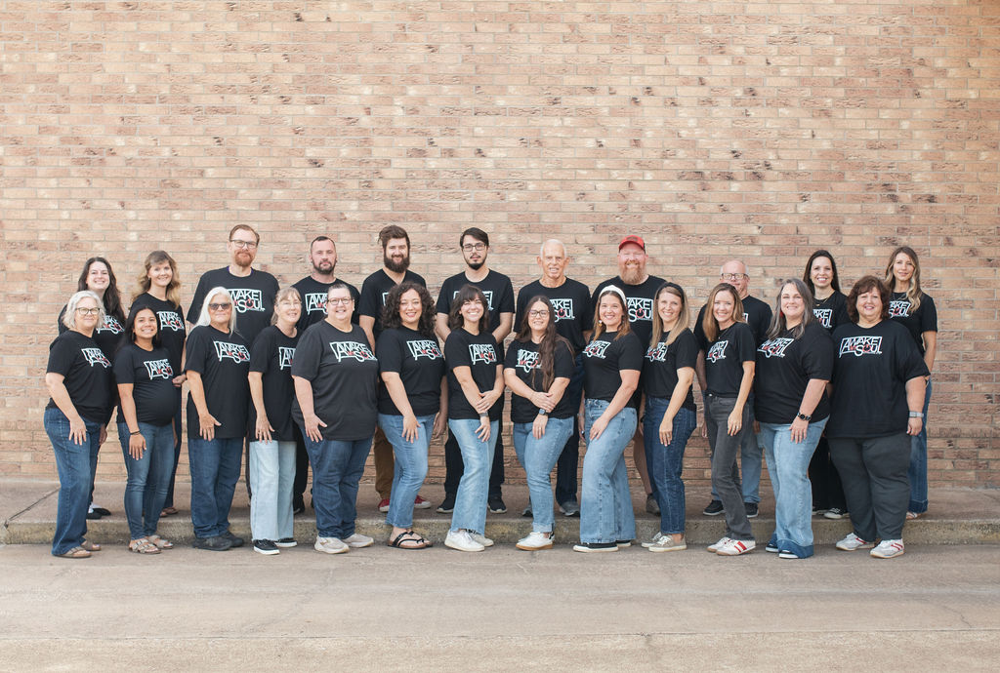
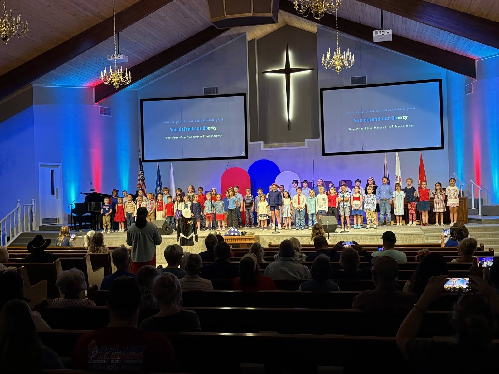
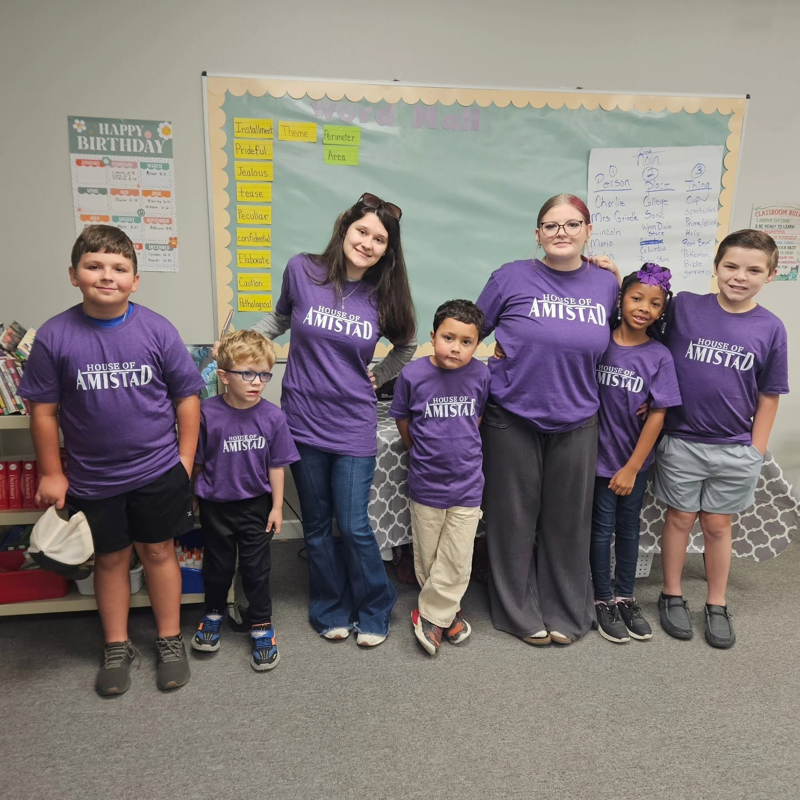
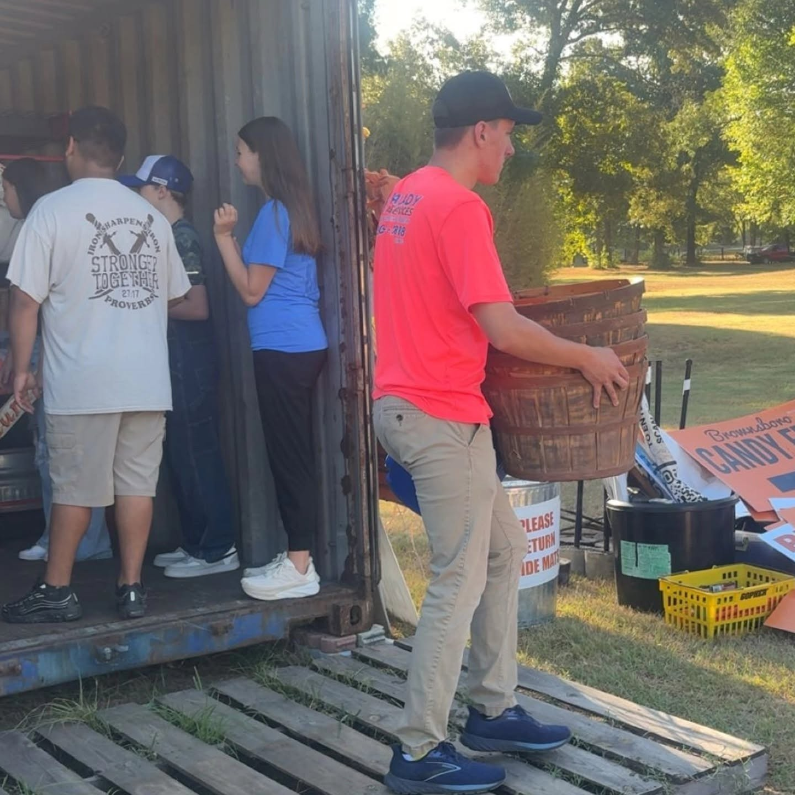
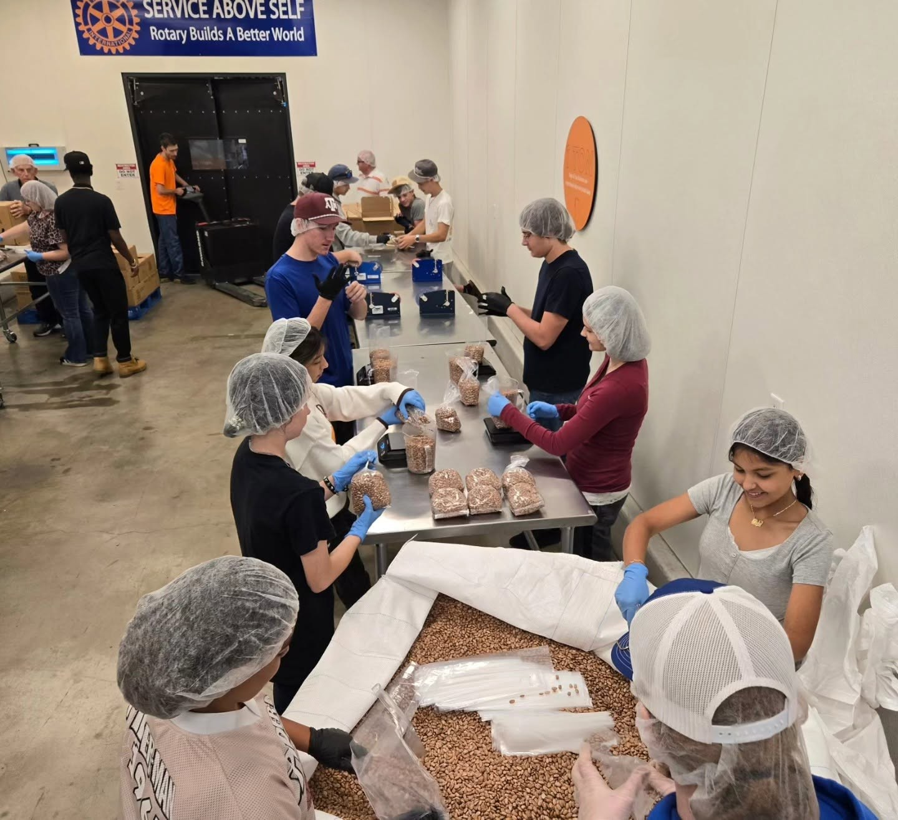
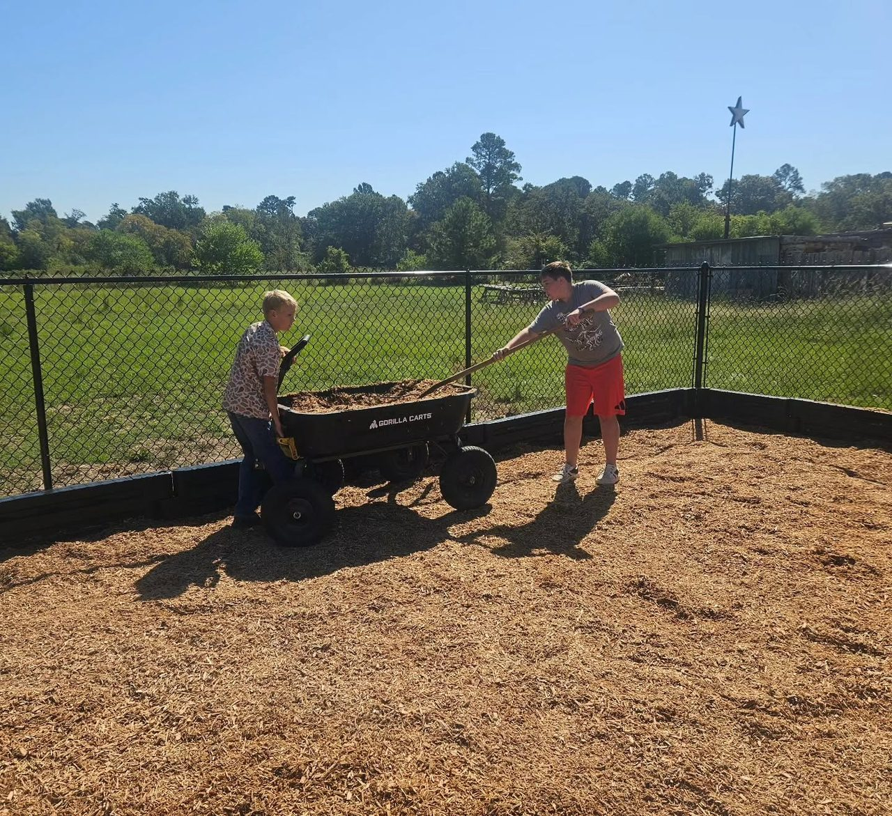

Neighbor Story · Chandler
Empower Christian Academy: Where Faith Meets the Needs of Families
Head of School Denise Davis has watched a Chandler homeschool group of four girls grow into a pre-K through 12th-grade school of 113 students, and she wants to stay faithful to what God has called.

Empower Christian Academy sits at 1439 FM 315 in Chandler with a plainspoken tagline: Small School…Big Impact. Led by Head of School Denise Davis, Empower has grown from a small gathering of homeschool families to a Christian school rooted in faith, relationships, and a commitment to helping students flourish.
Denise does not see Empower as a competition with the other ways that families educate their children. “It’s not a one size fits all,” she said. “When a parent is talking to us, it’s finding what fits best for that child. Sometimes it is homeschooling.” Sometimes the right fit is a Christian school, she said, and sometimes children are thriving in public school. “I never look at it as a competition, but what is best and what does this child need and what does this family need right now?” Like public schools and like families who homeschool, Empower is one more way to help meet the needs of students and families in the community — a place to come alongside parents and see children grow and flourish.
“We actually started as a homeschool group,” Denise said. “With just four girls and two families that hired me to teach their kids.” The following year, the group moved to West Lake Baptist Church, where Denise and another teacher taught 12 students. About three years into the journey, Empower became a private Christian school, established nonprofit status, and formed a school board. Those steps gave structure to a shared vision among people with a heart for education and the school’s ministry.
The school began in 2013. “We have 113 students now,” Denise said, pre-K through 12th grade. A typical class has about 12 to 14 students, and the little pre-K class has three. Empower has 24 staff on their team. All along, Denise said, the aim has been to meet the needs of the students and to offer a Christian education that is affordable to families. A solid education, grounded in Jesus Christ.
“That’s our whole goal is a small school but with a big impact,” she said, “and that the impact we hope is for is to reach the world for Christ.”
Denise and her husband, Keith, moved to the area 22 years ago. Keith serves as a worship pastor at West Lake Baptist Church. They have four children ranging from 12 to 30 that all live nearby and three grandchildren that they love spending time with.
“I just want to be faithful to what God’s called.”
Coming Full Circle at West Lake
Empower began at West Lake before spending a season at Faith Baptist in Chandler, followed by five years at Rock Hill. Now, the school has come home to where it all began. “Returning to West Lake has been really special,” Denise said. “There’s something meaningful about coming full circle.”
Denise did not walk that path alone. As she answered that call, churches, families, and others throughout the community came alongside her. Faith Baptist in Chandler, Rock Hill Baptist Church in Brownsboro, and now West Lake have each opened their doors and become part of Empower’s story.
“So many churches and people across the community have worked together,” Denise said. “We’ve been blessed along the way.”
Parents often describe the school as an extended family, with staff who stand in the gap, pray with them, and offer support. Looking back, Denise sees how God used each season and the families it brought for His purpose and His glory.
Returning home to West Lake has been even sweeter than she expected. The church has embraced the school with intentional encouragement and a shared sense of purpose, making Empower feel truly at home.

Last week, so many from West Lake came to the school’s Veterans Day program. The younger children sang, and the school invited veterans from the community, the church, family members, and friends, to thank them, celebrate them, and pray over them.
Supporting Learners Where They Are
Holly Doss, a special education teacher, moved to the Chandler area about four years ago from southern New Mexico with her husband, Jim, and their two boys. Holly provides educational therapy to students at Empower and serves as the Director of the Academic Resource Center.
Holly works with students who experience various difficulties with learning, helping to identify the underlying skills that may be affecting their progress. Through individualized NILD Educational Therapy, she helps students strengthen the cognitive skills needed for learning while growing in confidence and independence. She also partners with classroom teachers to better understand and support the needs of individual students.
“We learn when we struggle,” Holly said. She believes in gently pushing students just beyond what they think they can do and enjoys watching them grow and discover what they are capable of.
As parents of Empower students themselves, Holly and Jim send their boys to school each day confident they will be loved and cared for. “I’m so thankful they get to spend their days in a place that feels like a family, where they are genuinely loved and taught the truth of Jesus,” she said.
A House for Every Grade, and Go Day

This year the school is also piloting a house system, splitting the entire student body and staff into four houses, kindergarten through 12th grade, so high schoolers are in the same house as kindergartners. The houses are named Nukumori, Veritas, Amistad, and Protos, and each highlights a trait: kindness, truth, friendship, and leadership. They come together weekly for devotion and prayer, to serve, and for team building — a way, Denise said, to connect older students with younger ones after years of being split across campuses.

Once a month, that serving takes Empower’s students into the community for what the school calls Go Day. They have served at West Lake’s food bank and clothes closet and at the East Texas Food Bank, helped with service projects at Union Hill — including setting up the pumpkin patch — and served at Faith Baptist Church in Brownsboro, at FBC Winona, and with residents at Chandler Nursing Home. Next month they are set to lead a chapel at Breckenridge Village. Faith Baptist in Brownsboro lets the school use a bus for those days; some of that church’s children attend Empower.
In October, Nukumori, Veritas, and Amistad went to the East Texas Food Bank, where high school students packed food for neighbors. Protos stayed at West Lake, helping at the food bank and getting the playground ready. While the high schoolers are out, the middle school group helps with the younger students, so relationships run from the early grades through 12th.


For older students, Empower has added hands-on electives such as welding, wood shop, theater, and culinary, so students who may not love only the book side of school can still thrive in their gifts. The school also offers volleyball, cross country, archery, and fishing. The volleyball team has competed with schools all around, public and private, and cross country has run big meets in Tyler.
A Faithful Next Step
Some classes still have midyear openings, and new enrollment for the next school year opens March 1. Denise said the school does have some room to grow, and they are praying through what the future will look like. What matters most, she said, is that families understand the mission and heart of the school and are aligned in what they believe, walking together in a spirit of discipleship.
People sometimes ask about a five-year goal or a 10-year goal. Denise’s answer is not a target of 500 or 1,000 students. It is to stay faithful, with the families and the community who have been part of the school along the way.
“I just want to be faithful to what God’s called,” she said. “So whatever that looks like… if we have more, if we have less, just want to be faithful to what God’s called it to be.”